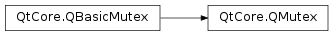

QMutex¶
Detailed Description¶
The
PySide2.QtCore.QMutexclass provides access serialization between threads.The purpose of a
PySide2.QtCore.QMutexis to protect an object, data structure or section of code so that only one thread can access it at a time (this is similar to the Javasynchronizedkeyword). It is usually best to use a mutex with aPySide2.QtCore.QMutexLockersince this makes it easy to ensure that locking and unlocking are performed consistently.For example, say there is a method that prints a message to the user on two lines:
number = 6 def method1(): number *= 5 number /= 4 def method2(): number *= 3 number /= 2If these two methods are called in succession, the following happens:
# method1() number *= 5 # number is now 30 number /= 4 # number is now 7 # method2() number *= 3 # number is now 21 number /= 2 # number is now 10If these two methods are called simultaneously from two threads then the following sequence could result:
# Thread 1 calls method1() number *= 5 # number is now 30 # Thread 2 calls method2(). # # Most likely Thread 1 has been put to sleep by the operating # system to allow Thread 2 to run. number *= 3 # number is now 90 number /= 2 # number is now 45 # Thread 1 finishes executing. number /= 4 # number is now 11, instead of 10If we add a mutex, we should get the result we want:
mutex = QMutex() number = 6 def method1(): mutex.lock() number *= 5 number /= 4 mutex.unlock() def method2(): mutex.lock() number *= 3 number /= 2 mutex.unlock()Then only one thread can modify
numberat any given time and the result is correct. This is a trivial example, of course, but applies to any other case where things need to happen in a particular sequence.When you call
PySide2.QtCore.QMutex.lock()in a thread, other threads that try to callPySide2.QtCore.QMutex.lock()in the same place will block until the thread that got the lock callsPySide2.QtCore.QMutex.unlock(). A non-blocking alternative toPySide2.QtCore.QMutex.lock()isPySide2.QtCore.QMutex.tryLock().
PySide2.QtCore.QMutexis optimized to be fast in the non-contended case. A non-recursivePySide2.QtCore.QMutexwill not allocate memory if there is no contention on that mutex. It is constructed and destroyed with almost no overhead, which means it is fine to have many mutexes as part of other classes.
-
class
PySide2.QtCore.QMutex([mode=NonRecursive])¶ Parameters: mode – PySide2.QtCore.QMutex.RecursionModeConstructs a new mutex. The mutex is created in an unlocked state.
If
modeisQMutex.Recursive, a thread can lock the same mutex multiple times and the mutex won’t be unlocked until a corresponding number ofPySide2.QtCore.QMutex.unlock()calls have been made. Otherwise a thread may only lock a mutex once. The default isQMutex.NonRecursive.Recursive mutexes are slower and take more memory than non-recursive ones.
See also
PySide2.QtCore.QMutex.lock()PySide2.QtCore.QMutex.unlock()
-
PySide2.QtCore.QMutex.RecursionMode¶ Constant Description QMutex.Recursive In this mode, a thread can lock the same mutex multiple times and the mutex won’t be unlocked until a corresponding number of PySide2.QtCore.QMutex.unlock()calls have been made.QMutex.NonRecursive In this mode, a thread may only lock a mutex once. See also
PySide2.QtCore.QMutex.QMutex()
-
PySide2.QtCore.QMutex.tryLock([timeout=0])¶ Parameters: timeout – PySide2.QtCore.intReturn type: PySide2.QtCore.boolAttempts to lock the mutex. This function returns
trueif the lock was obtained; otherwise it returnsfalse. If another thread has locked the mutex, this function will wait for at mosttimeoutmilliseconds for the mutex to become available.Note: Passing a negative number as the
timeoutis equivalent to callingPySide2.QtCore.QMutex.lock(), i.e. this function will wait forever until mutex can be locked iftimeoutis negative.If the lock was obtained, the mutex must be unlocked with
PySide2.QtCore.QMutex.unlock()before another thread can successfully lock it.Calling this function multiple times on the same mutex from the same thread is allowed if this mutex is a
recursive mutex. If this mutex is anon-recursive mutex, this function will always return false when attempting to lock the mutex recursively.See also
PySide2.QtCore.QMutex.lock()PySide2.QtCore.QMutex.unlock()
© 2018 The Qt Company Ltd. Documentation contributions included herein are the copyrights of their respective owners. The documentation provided herein is licensed under the terms of the GNU Free Documentation License version 1.3 as published by the Free Software Foundation. Qt and respective logos are trademarks of The Qt Company Ltd. in Finland and/or other countries worldwide. All other trademarks are property of their respective owners.